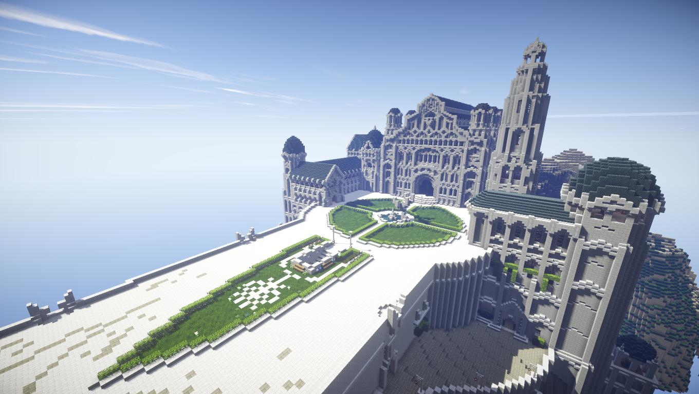

Minecraft

Ajatu seiklus blokkide maailmas
Minecraft on 2011 aastal avaldatud sandbox mäng. Mängijale on antud vabad käed luua enda ümber selline maailm nagu ta soovib ning ehitada, mida iganes ta ette suudab kujutada. Mängul on Survival ja Creative. Survival Mode-is on mängija ülesanne ellu jääma ning võiks mängu lõpuks tappa Ender Dragon, aga mängijad ei sunnita kuidagi selleks ning tegelikult võib ka Survival Mode-is ehitada mida tahes ja teha mida iganes, ainult vaja arvestada sellega, et mängija võib surma saada. Creative mode-is on mängijal ligipääs kõigile blokkidele ning ehitamiseks on vaja ainult visiooni ja saabki ehitama asuda. Minecrafti on võimalik mängida ka koos teistega veebis.

Minecraftis ehitatud töötav arvuti(pildile vajutades leiate ka video)
Minecraftil on hästi aktiivne kogukond, kus koguaeg jagatakse uusi ehitisi, ehitamisstiile ja keerulisi punakivi leiutisi. Minecraftis on palju servereid ning ka palju mängijaid. Serverites on võimalik mängida erinevaid minigame, mis on heaks vahelduseks survival mode-ile. Populaarsemad minigame-id on Bedwars, Skyblock ja erinevad ehitusvõistlused.

"Kääbikust" ja "Sõrmuste isandast" Kuningatemaa Minecraftis ehitatuna
Mulle meeldib vabadus, mis on mulle mängus antud. Ma olen üks neist, kellele meeldib oma kujutlusvõimet realiseerida ja Minecraft on selleks päris hea vahend. Näiteks olen ise ehitanud võluritorne, losse, punakivi uksi, lifte ja automaatfarme. Lisaks on lahe see, et siin on võimalik peaaegu kõike automatiseerida punakivi abiga. Sõpradega koos Survival mode-is mängides on võimalik omavahel ülesanded ära jagada ning mängu on võimalik kasutada meeskonnatöö arendamiseks. Mängu puhul häirib see, et osad uuendused ei sobi mängu. Näiteks Deep dark-i uuendus tõi endaga kaasa ancient city ala, kus esineb minu meelest mängu mitte sobiv warden. Warden ei sobi sinna, sest ta on mõttetult tugev ning tema tekkimist on raske ennetada. Nagu sellest veel ei piisaks, on tal võimas rünnak, mis tapab sind ühe löögiga isegi raudrüüs,kilbistki pole kasu, sest warden on võimeline selle kahjutuks tegema.(noorema venna rant :D)
PS! arvamus pärineb veebilehe looja nooremalt vennalt, enda Minecraft-i kogemus on puudulik
Mängu ühte uuendust tutvustav treiler

Saadaval platvormidel

Copyright © 2023 9Jh07, all rights reserved.